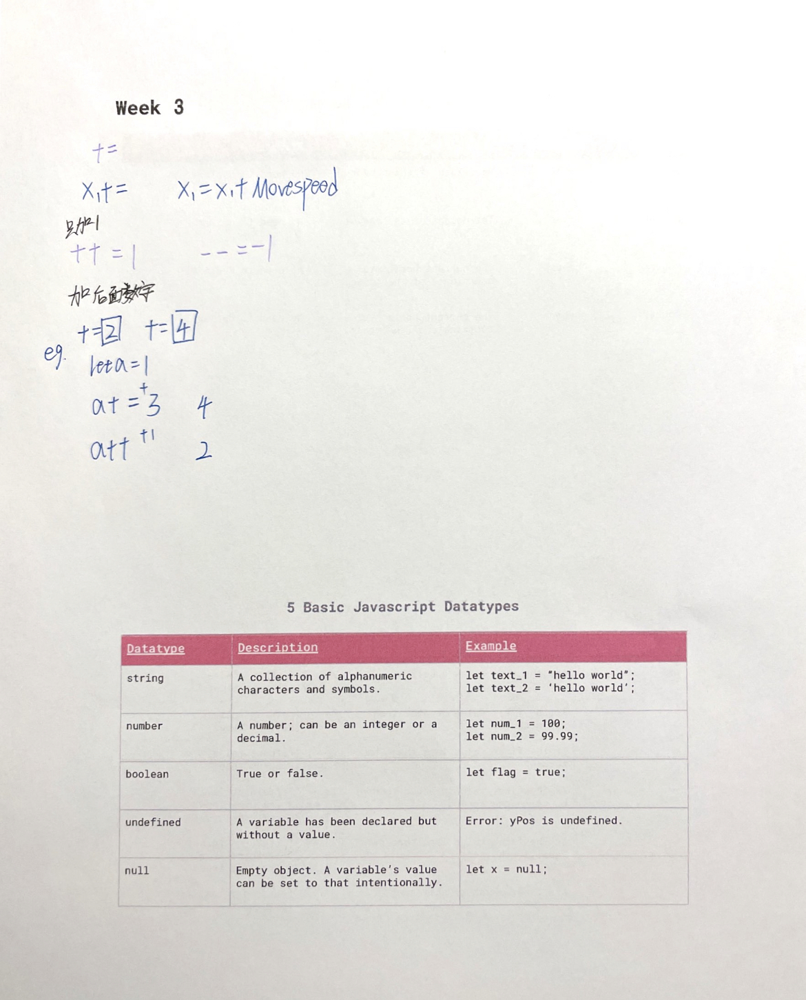
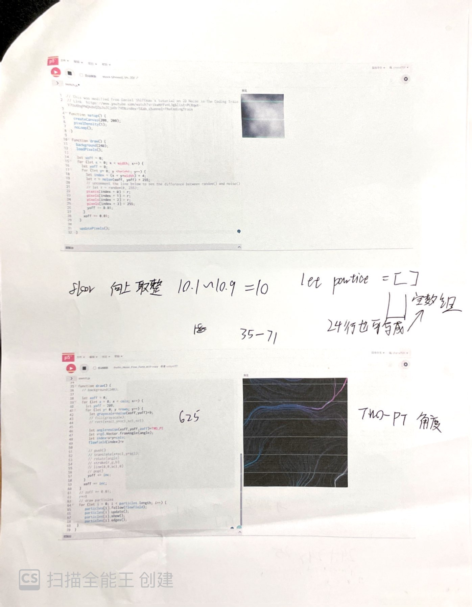
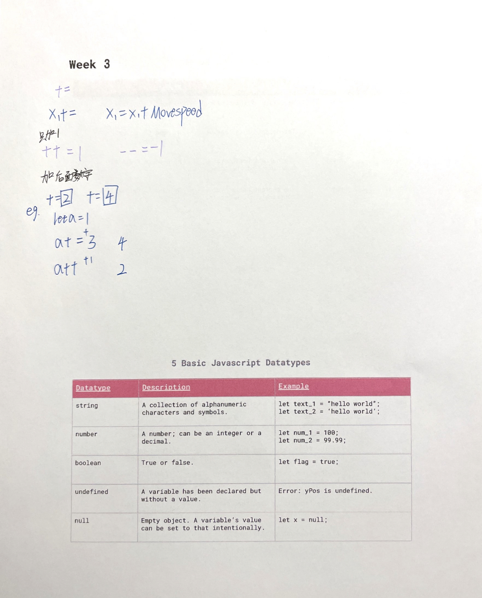
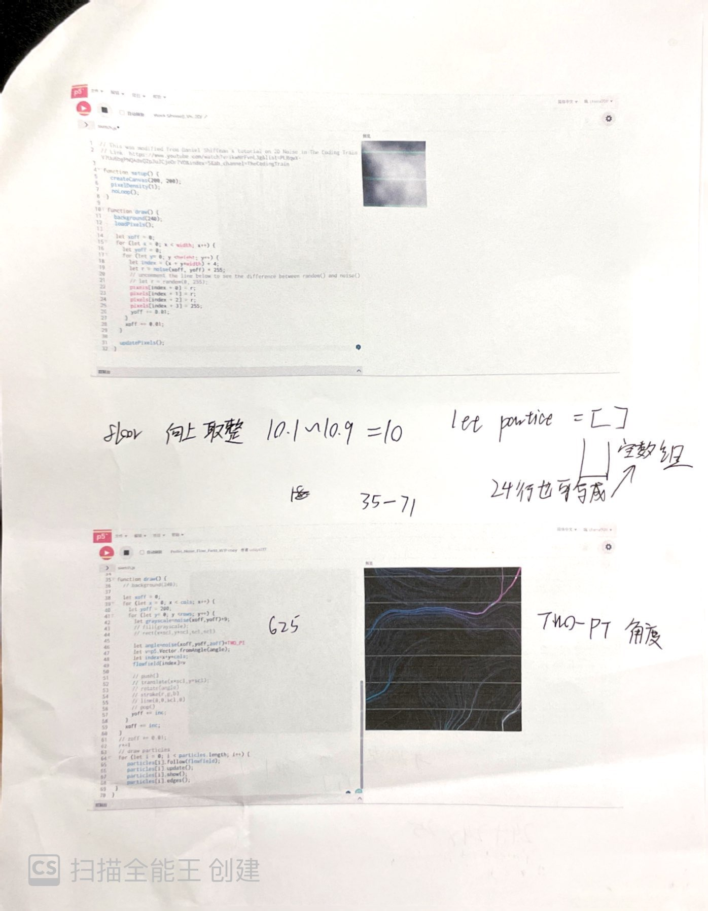

Click on title to see the code :D
The article I have chosen is on beginning. The main idea of it was that life is a circle, and the end is also a new beginning. After reading it, I thought about my experience of leaving home and studying alone in a foreign country. I buried my deep thoughts about my family in my heart and used it as strength to support me along the way.
For the first two scenes, I wanted to convey a feeling that No matter how I try to hide it, I am still filled with thoughts of my family. I thought that my homesickness would be forgotten with the passage of time, but on the contrary, it only grew inside me like a stream of water.The third scene is about how my life looks very wonderful on the surface, but the feeling is fragile and unreal.
The second stage is about the process of finding myself. The little good things in life made me find myself again, such as finding coins in clothes, reading a meaningful article, and caring words from a stranger. These small warm things put me back together, dried the tears, and got me back on the road.
The third stage is about the power of life. Life is as resilient as a seed. Even under a thick wall, the seed will grow silently in the darkness and eventually break the hardship and bloom a beautiful flower.
In the end, I returned to the article itself, "On Beginning", which I think represents the meaning behind not ignoring difficulties but being hopeful after understanding the struggles of life. I mimicked the end of the movie with the continuous playing of the subtitles, which indicated the end of the story. But its continuous scrolling behavior is meant to imply that it was both an end and a new beginning.


 


